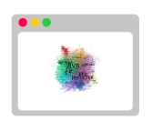

A Question
How are software tools and terms interrelated? What does the software ecosystem look like?

A Dataset
Use the cooccurrences of tags from over 5 million software questions on Stack Overflow to identify related terms

A Result
A graph showing the relations between every tag on stackoverflow, organized so that closely related terms are close together.